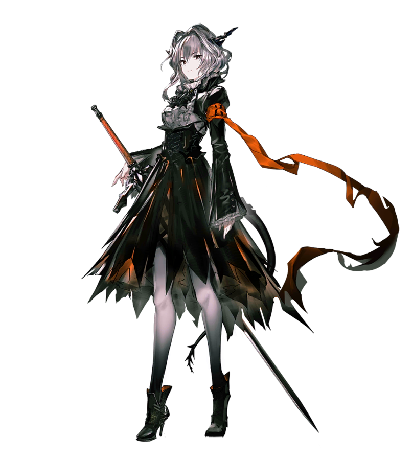

敌方

|
霜星（frostnova）整合运动法术部队干部，雪怪小队队长，“爱国者”的养女，第四章和第六章的封面人物。 父母因反对乌萨斯的战时策略而被送去某处矿场，祖母也受牵连迁至矿场，霜星则出生于此。五岁和十岁时，父母和祖母分别被矿场驻军杀害，十一岁时险些被杀害，被当时的“爱国者”救下。 十六岁时第一次召唤出寒流，因强大的源石技艺被人称呼为“大姐”，之后在冰原上辗转十数年遇到了塔露拉，正式加入整合运动。在整合运动中因和“爱国者”的价值观不同，称之为“老顽固”。 在切尔诺伯格分城与罗德岛初次遭遇并开战，战斗中与罗德岛的博士被困于地下，与其吐露心声。 之后前往龙门接应梅菲斯特时因过度使用源石技艺导致时日无多，雪怪小队为了让霜星能够见爱国者最后一面主动殿后而全员阵亡。苏醒后得知此事的的霜星主动留下来阻截追来的阿米娅一行人，并使出了超规格的源石技艺，令阿米娅、煌和灰喉都难以招架。最终由于耗尽体力，用于维生的晶体破碎而倒地，在博士的怀里说出“愿意加入罗德岛”的誓言后含笑而逝。 遗体被博士带回罗德岛处理防止结晶粉尘化。 『从现在开始，我在你身边。我在你们身边。我……愿意加入罗德岛。』 |
爱国者（Patriot）“爱国者”，原名博卓卡斯替，萨卡兹中仅存的一位血统纯正的温迪戈。出生于卡兹戴尔，后来成为乌萨斯军队大尉，效忠于乌萨斯上任皇帝。 因现任皇帝针对感染者的政策使其痛失爱子，就此离开乌萨斯为感染者而战，与部下一同化身为西北冻原的游击队，专门制裁残害感染者的乌萨斯人。就在这一时期，博卓卡斯替在北原某矿场救下了年仅十一岁的霜星，认其为养女。十数年后，与霜星一起加入了整合运动。 与凯尔希和赫拉格相识，尊称赫拉格为“将军”，凯尔希为“女勋爵”。曾经和凯尔希并肩作战，也曾在卡西米尔救下过赫拉格，赫拉格称赞他是“乌萨斯最出色的战地指挥官”。 在罗德岛针对撞击龙门的切城的斩首行动中，拒绝与罗德岛并肩而站在对立面，遂在战斗后成仁。 『感染者游击队“盾”的指挥官。萨卡兹勇士中古老至极的血脉。乌萨斯最壮毅的战争化身。整合运动的脊骨。叶莲娜之父。』 |
|  |
塔露拉（Talulah）整合运动的领袖，在第一章登场，幼年时被科西切公爵拐走，直至今日以整合运动领袖身份现身。在罗德岛撤离切尔诺伯格时因强大的实力被临光评价为“活生生的怪物”，之后率领整合运动攻占了切尔诺伯格。 在罗德岛和龙门压制整合运动时操控切尔诺伯格核心城欲与龙门相撞，引发乌萨斯与龙门之间的战争。 在切城控制塔顶部与陈正面对决，阿米娅及时现身并揭穿了其为科西切的灵魂，在阿米娅升变后与陈联手战胜了塔露拉，唤醒了塔露拉自身的灵魂，交出了控制塔钥匙以彻底停止切尔诺伯格。 目前被罗德岛收监，然而科西切的意识并没有消失，依然在尝试影响塔露拉，但现在的塔露拉已经不再被科西切所控制。 『我将赐予你们一个我十分喜爱的结局——毁灭。』 |